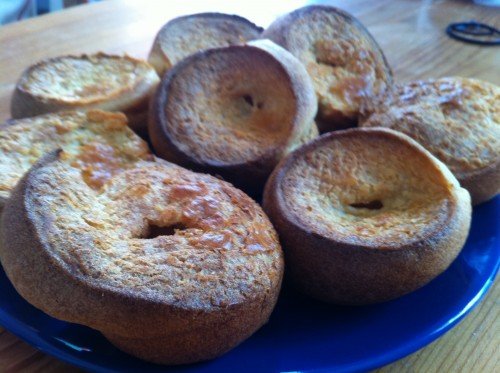

If your popover fails, it still makes a delicious hockey puck. I also love popovers because they are relatively quick to throw together (about an hour to mix and bake), use 4 basic ingredients (milk, butter, flour, eggs), and are mostly healthy: they won’t induce the same carb coma as pancakes and have fairly little butter baked in (so you can spread a lot on top).
I have made both a ton of popovers and a ton of hockey pucks, so this is my fairly fool-proof method for making the former, not the latter.
Ingredients
1 cup whole wheat pastry flour (or 3/4 C white whole wheat flour + 1/4 C All Purpose White Flour; I have not managed to get consistent results with 100% white whole wheat)
1/4 teaspoon salt
2 eggs (room temperature)
1 cup milk (room temperature)
1 tablespoon melted butter, + more for greasing
Steps
Preheat oven to 400 degrees.
If you forget to set out the eggs and milk, do this: put the milk and eggs in a pyrex measuring bowl in the oven while the oven preheats; be sure to check it after ~5 minutes (you just want to bring it to room temperature or a little warmer; if it gets too hot, when you mix in the flour the starch will get activated and it’ll be gross).
Put a muffin tin in the oven while preheating (you want it hot). Some people also brown a little bit of butter in the bottom of each well (this recipe makes 8 popovers if you’re using a normal-sized muffin tin). I don’t usually do this—I just rub a stick of butter around after the tin is preheated (about 5 min)
Whisk the eggs, milk and melted butter. All the recipes I’ve read warn of overmixing: get a little air in, but no need to beat for more than 30 seconds or so.
Add the flour and salt and whisk about 15 seconds longer. You should see a bunch of little air bubbles.
Take the preheated muffin cups out of the oven; if you browned the butter in the oven, give it a swirl to grease up the sides; otherwise grease it up with a stick of butter. Fill each well in the tin about 1/2 to 3/4 of the way full (I’m able to get 8 of them out of this recipe).
Bake at 400 degrees for 15 minutes (don’t open the oven!), then turn down to 350 degrees (still don’t open the oven!) and bake 25 minutes more. Open the oven (finally!), poke a quick hole in the top of each with a knife, and let them bake about 5 minutes more.
Take them out of the oven and eat.
Key takeaways:
You need room-temperature ingredients
Pre-heat the muffin tin
Have a hot oven
Don’t open the oven until the very end. This sucks because if the popovers fail, they fail in the first 10 minutes of baking; but you won’t find out till 30 minutes later (if you open the door mid-bake, they might fall, which isn’t as bad, but not quite as impressive).